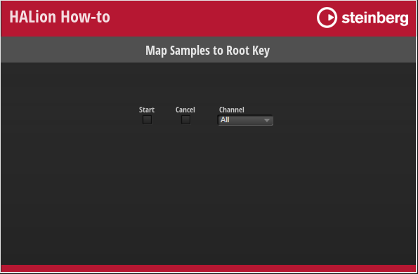

/ HALion Developer Resource / HALion Tutorials & Guidelines / How-tos /
Map Samples to Root Key
On this page:
This how-to shows how to map sample zones automatically to the root key that matches the analyzed pitch of the sample. Such helper functions can be useful during the production of large-scale sample libraries.
Example VST Preset
The script parameters Start, Cancel and Channel can be accessed from the macro page of the example VST preset.

❕ The example VST preset requires the factory content of HALion.
Prerequisites
- A program with sample zones.
- The samples have a distinct pitch.
Mapping Samples to the Root Key
The example below assumes that you have a program with sample zones that are not mapped to the root key yet.
- Add a Lua Script module to your program.
- Copy the following code to the Lua Script module.
channelNames = { [0] = "All", "Left", "Right" }
defineParameter( "Channel", nil, 0, channelNames)
defineParameter( "Start", nil, false, function() if Start then onStart() end end)
defineParameter( "Cancel", nil, false)
function onPitchAnalysisFinished(audioFile, channelNum)
print("Progress: 100%")
print(channelNames[channelNum].." channel(s) of "..audioFile.fileName.." analyzed.")
end
function onStart()
zones = this.parent:findZones(true)
for i, zone in ipairs(zones) do
local samplePath = zone:getParameter("SampleOsc.Filename")
print("File: "..samplePath)
local afile = AudioFile.open(samplePath)
afile:analyzePitch(onPitchAnalysisFinished, Channel)
while afile:getPitchAnalysisProgress(Channel) < 1 do
if Cancel then
afile:cancelPitchAnalysis(Channel)
break
end
local progressPercent = 100 * afile:getPitchAnalysisProgress(Channel)
print(string.format("Progress: %2d%%", progressPercent))
wait(2000)
end
if Cancel then
Cancel = false
print("Canceled!")
break
end
local pitch = afile:getPitch(0, -1, Channel)
pitch = math.floor(pitch+0.5)
print("Analyzed Pitch: "..pitch)
zone:setParameter("SampleOsc.Rootkey", pitch)
zone.keyLow = pitch
zone.keyHigh = pitch
end
print("Done!")
Start = false
end
- Go to the Parameter List and activate "Start".
- Open the Mapping editor.
The sample zones will be mapped automatically to the matching root key.